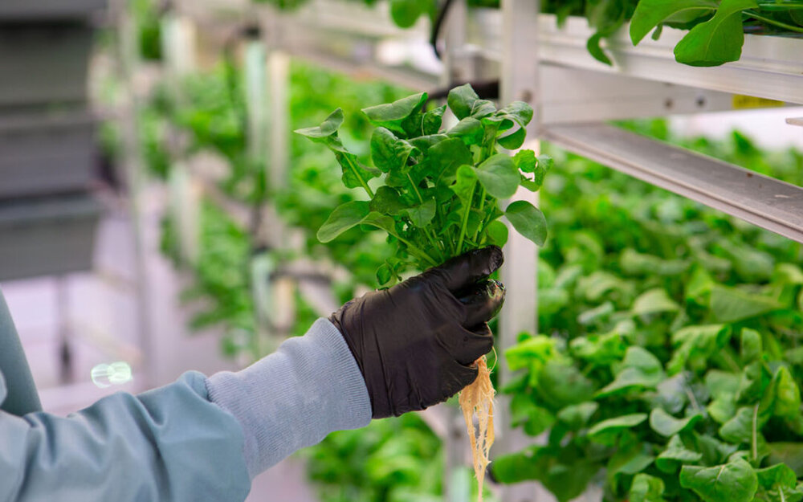
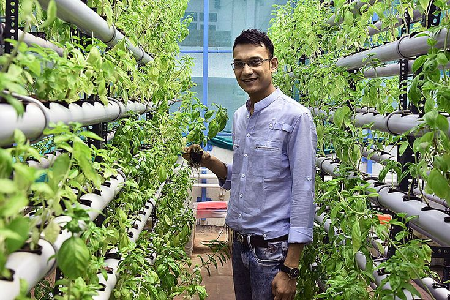

ABOUT US

We here at TGF hydroponics are a family of farmers who, through lots of trial and error, learned sustainable, efficient and environmentally friendly method of farming by utilizing hydroponics. We would love nothing more but to share our expertise and love for innovative planting. We cater to mostly small gardeners and farmers but aim to soon be able to cater on a commercial level. Hydroponic farming makes planting so much easier with half the effort of traditional farming. TGF Hydroponics provides an easy and cost effective solution to high yield intensive agriculture through hydroponics.
Did you know that vertical farming through Hydroponics uses 85% less water than traditional farming? Vertical Farming also allows for more production! Each unit of area in a vertical farm can allow up to 20 units of area of outdoor farm land to return to its natual sate and recover farmlands due to development from original farmlands.